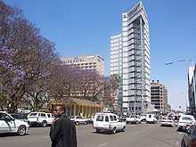

Economy of Zimbabwe
|  | |
| Currency | Zimbabwe Gold |
|---|---|
| calendar year | |
Trade organisations | AU, AfCFTA, WTO, SADC, COMESA |
Country group |
|
| Statistics | |
| Population | |
| GDP | |
| GDP rank | |
GDP growth | |
GDP per capita | |
GDP per capita rank | |
GDP by sector |
|
| 172.2% (2023 est.)[4] | |
Population below poverty line | |
| 44.3 medium (2017)[11] | |
Labour force | |
Labour force by occupation |
|
| Unemployment | |
Main industries | mining (coal, gold, platinum, copper, nickel, tin, clay, numerous metallic and non-metallic ores), steel; wood products, cement, chemicals, fertilizer, clothing and footwear, foodstuffs, beverages, cattle, cows |
| External | |
| Exports | |
Export goods | platinum, cotton, tobacco, gold, ferroalloys, textiles/clothing |
Main export partners |
|
| Imports | |
Import goods | machinery and transport equipment, other manufactures, chemicals, fuels, food products |
Main import partners |
|
FDI stock | |
Gross external debt | |
| Public finances | |
| −9.6% (of GDP) (2017 est.)[8] | |
| Revenues |
|
| Expenses | 5.5 billion (2017 est.)[8] |
| Economic aid | recipient: $178 million; note – the EU and the US provide food aid on humanitarian grounds (2000 est.) |
All values, unless otherwise stated, are in US dollars. | |
{kind=link}
{kind=link}
The economy of Zimbabwe is a gold standard based economy. Zimbabwe has a $44 billion dollar informal economy in PPP terms which translates to 64.1% of the total economy.[22] Agriculture and mining largely contribute to exports. The economy is estimated to be at $73 billion at the end of 2023.[23]
The country has reserves of metallurgical-grade chromite. Other commercial mineral deposits include coal, asbestos, copper, nickel, gold, platinum and Iron ore.[24]
Current economic conditions
[edit]In 2000, Zimbabwe planned a land redistribution act to seize white-owned, commercial farms attained through colonization and distribute the land to the black majority. The new occupants, mainly consisting of indigenous citizens and several prominent members of the ruling ZANU-PF administration, were inexperienced or uninterested in farming, thereby failing to retain the labour-intensive, highly efficient management of previous landowners.[25] Short term gains were achieved by selling the land or equipment. The contemporary lack of agricultural expertise triggered severe export losses and negatively affected market confidence. The country has experienced a massive drop in food production and idle land is now being utilised by rural communities practising subsistence farming. Production of staple foodstuffs, such as maize, has recovered accordingly – unlike typical export crops including tobacco and coffee.[26] Zimbabwe has also sustained the 30th occurrence of recorded hyperinflation in world history.[27]
Government spending is 29.7% of GDP. State enterprises are strongly subsidized. Taxes and tariffs are high, and state regulation is costly to companies. Starting or closing a business is slow and costly.[28] Due to the regulations of the labour market, hiring and terminating workers is a lengthy process. By 2008, an unofficial estimate of unemployment had risen to 94%.[29]
As of 2023, Zimbabwe's official unemployment rate stood at 9.3%.[30][a]
A 2014 report by the Africa Progress Panel[31] found that, of all the African countries examined when determining how many years it would take to double per capita GDP, Zimbabwe fared the worst, and that at its current rate of development it would take 190 years for the country to double its per capita GDP.[32] Uncertainty around the indigenisation programme (compulsory acquisition), the perceived lack of a free press, the possibility of abandoning the US dollar as official currency, and political uncertainty following the end of the government of national unity with the MDC as well as power struggles within ZANU-PF have increased concerns that the country's economic situation could further deteriorate.[33]
In September 2016 the finance minister identified "low levels of production and the attendant trade gap, insignificant foreign direct investment and lack of access to international finance due to huge arrears" as significant causes for the poor performance of the economy.[34]
Zimbabwe came 140 out of 190 ease of doing business report released by the World Bank Group. They were ranked high for ability to get credit (ranked 85) and protecting minority investors (ranked 95).[35]
Infrastructure and resources
[edit]Transportation
[edit]Zimbabwe's internal transportation and electrical power networks are adequate; nevertheless, maintenance has been ignored for several years. Zimbabwe is crossed by two trans-African automobile routes: the Cairo-Cape Town Highway and the Beira-Lobito Highway. Poorly paved highways connect the major urban and industrial areas, while rail lines controlled by the National Railways of Zimbabwe connect Zimbabwe to a vast central African railroad network that connects it to all of its neighbors.
Energy
[edit]The Zimbabwe Electricity Supply Authority is responsible for providing the country with electrical energy. Zimbabwe has two larger facilities for the generation of electrical power, the Kariba Dam (owned together with Zambia) and since 1983 by large Hwange Thermal Power Station adjacent to the Hwange coal field. However, total generation capacity does not meet the demand, leading to rolling blackouts. The Hwange station is not capable of using its full capacity due to old age and maintenance neglect. In 2006, crumbling infrastructure and lack of spare parts for generators and coal mining lead to Zimbabwe importing 40% of its power, including 100 megawatts from the Democratic Republic of Congo, 200 megawatts from Mozambique, up to 450 from South Africa, and 300 megawatts from Zambia.[36] In May 2010 the country's generation power was an estimated 940MW against a peak demand of 2500MW.[37] Use of local small scale generators is widespread.
Telephone
[edit]New telephone lines used to be difficult to obtain. With TelOne, however, Zimbabwe has only one fixed line service provider.[38][39] Cellular phone networks are an alternative. Principal mobile phone operators are Telecel, Net*One, and Econet.[38]
Agriculture
[edit]Agriculture in Zimbabwe can be divided into two parts: commercial farming of crops such as cotton, tobacco, coffee, peanuts and various fruits, and subsistence farming with staple crops, such as maize or wheat.
Commercial farming was almost exclusively in the hands of the white minority until the controversial land redistribution program began in 2000. Land in Zimbabwe was forcibly seized from white farmers and redistributed to black settlers, justified by Mugabe on the grounds that it was meant to rectify inequalities left over from colonialism.[40] The new owners did not have land titles, and as such did not have the collateral necessary to access bank loans.[41] The small-scale farmers also did not have experience with commercial-scale agriculture.
After land redistribution, much of Zimbabwe's land went fallow, and agricultural production decreased steeply.[42] The University of Zimbabwe estimated in 2008 that between 2000 and 2007 agricultural production decreased by 51%.[43] Production of tobacco, Zimbabwe's main export crop, decreased by 79% from 2000 to 2008.[44][45]
Tobacco production recovered after 2008 thanks to the contract system of agriculture and growing Chinese demand. International tobacco companies, such as British American Tobacco and China Tobacco, supplied farmers with agricultural inputs, equipment, and loans, and supervised them in growing tobacco.[46][47] By 2018, tobacco production had recovered to 258 million kg, the second largest crop on record.[44][48] Instead of large white-owned farms selling mostly to European and American companies, Zimbabwe's tobacco sector now consists of small black-owned farms exporting over half of the crop to China.[49] Tobacco farming accounted for 11% of Zimbabwe's GDP in 2017, and 3 million of its 16 million people depended on tobacco for their livelihood.[50]
Land reform has found considerable support in Africa and a few supporters among African-American activists,[51] but Jesse Jackson commented during a visit to South Africa in June 2006, "Land redistribution has long been a noble goal to achieve but it has to be done in a way that minimises trauma. The process has to attract investors rather than scare them away. What is required in Zimbabwe is democratic rule, democracy is lacking in the country and that is the major cause of this economic meltdown."[52]
Zimbabwe produced, in 2018:
- 3,3 million tons of sugarcane;
- 730 thousand tons of maize;
- 256 thousand tons of cassava;
- 191 thousand tons of vegetable;
- 132 thousand tons of tobacco (6th largest producer in the world);
- 106 thousand tons of banana;
- 96 thousand tons of orange;
- 90 thousand tons of soy;
- 80 thousand tons of sorghum;
- 60 thousand tons of potato;
- 55 thousand tons of barley;
- 42 thousand tons of peanut;
- 38 thousand tons of cotton;
In addition to smaller productions of other agricultural products.[53]
Mining sector
[edit]As other southern African countries, Zimbabwean soil is rich in raw materials, namely platinum,[54] coal, iron ore, and gold. Recently, diamonds have also been found in considerable deposits. Copper, chromite and nickel deposits also exist, though in lesser amounts. The Marange diamond fields, discovered in 2006 are thought to be among the richest in the world.
In March 2011, the government of Zimbabwe implemented laws which required local ownership of mining companies; following this news, there were falls in the share prices of companies with mines in Zimbabwe.[55]
| Gold production year [56] | kg |
|---|---|
| 1998 | 27,114 |
| 2007 | 7,017 |
| 2015 | 18,400[57] |
Various NGOs reported that the diamond sector in Zimbabwe is rife with corruption; a November 2012 report by NGO Reap What You Sow revealed a huge lack of transparency of diamond revenues and asserted that Zimbabwe's elite are benefiting from the country's diamonds.[58] This followed former South African President Thabo Mbeki’s warning days earlier that Zimbabwe needed to stop its "predatory elite" from colluding with mining companies for their own benefit.[59] Also in that month, the Associated Press reported that at least $2 billion worth of diamonds had been stolen from Zimbabwe's eastern diamond fields and had enriched Mugabe's ruling circle and various connected gem dealers and criminals.[59]
In January 2013, Zimbabwe's mineral exports totalled $1.8 billion.[60]
As of October 2014, Metallon Corporation was Zimbabwe's largest gold miner.[61] The group is controlled by its Chairman Mzi Khumalo.
In 2019, the country was the world's 3rd largest producer of platinum[62] and the 6th largest world producer of lithium.[63] In the production of gold, in 2017 the country produced 23.9 tons.[64]
Education
[edit]The state of education in Zimbabwe affects the development of the economy while the state of the economy can affect access and quality of teachers and education. Zimbabwe has one of Africa's highest literacy rates at over 90%.[65] The crisis since 2000 has, however, diminished these achievements because of a lack of resources and the exodus of teachers and specialists (e.g. doctors, scientists, engineers) to other countries. Also, the start of the new curriculum in primary and secondary sections has affected the state of the once strong education sector.[66]
Science and technology in Zimbabwe
[edit]Zimbabwe's Second Science and Technology Policy (2012) cites sectorial policies with a focus on biotechnology, information and communication technologies (ICTs), space sciences, nanotechnology, indigenous knowledge systems, technologies yet to emerge and scientific solutions to emergent environmental challenges. The policy makes provisions for establishing a National Nanotechnology Programme.[67][68]
Zimbabwe has a National Biotechnology Policy which dates from 2005. Despite poor infrastructure and a lack of both human and financial resources, biotechnology research is better established in Zimbabwe than in most sub-Saharan countries, even if it tends to use primarily traditional techniques.[67][68]
The Second Science and Technology Policy asserts the government commitment to allocating at least 1% of GDP to research and development, focusing at least 60% of university education on developing skills in science and technology and ensuring that school pupils devote at least 30% of their time to studying science subjects.[67][68]
History
[edit]{kind=link}
In 1997, Zimbabwe's economic decline began to visibly take place. It began with the crash of the stock market on November 14, 1997. Civil society groups began to agitate for their rights as these had been eroded under ESAP. In 1997 alone, 232 strikes were recorded, the largest number in any year since independence (Kanyenze 2004). During the first half of 1997, the war veterans organized themselves and demonstrations that were initially ignored by the government. As the intensity of the strikes grew, the government was forced to pay the war veterans a once-off gratuity of ZWD $50,000 by December 31, 1997, and a monthly pension of US$2,000 beginning January 1998 (Kanyenze 2004). To raise money for this unbudgeted expense, the government tried to introduce a ‘war veterans’ levy,’ but they faced much opposition from the labor force and had to effectively borrow money to meet these obligations. Following the massive depreciation of the Zimbabwean dollar in 1997, the cost of agricultural inputs soared, undermining the viability of the producers who in turn demanded that the producer price of maize (corn) be raised. Millers then hiked prices by 24 percent in January 1998 by 24 percent and the consequent increase in the price of maize meal triggered nation-wide riots during the last month. The government intervened by introducing price controls on all basic commodities (Kanyenze 2004). Many interventionist moves were undertaken to try to reverse some of the negative effects of the Structural Adjustment Programs and to try to strengthen the private sector that was suffering from decreasing output and increasing competition from cheap imported products. Some of the most detrimental policies that followed include:[70]
{kind=link}
,_%25_of_world_average,_1960-2012;_Zimbabwe,_South_Africa,_Botswana,_Zambia,_Mozambique.png){kind=link}
1980–2000
[edit]At the time of independence, annual inflation was 5.4 percent and month-to-month inflation was 0.5 percent. Currency of Z$2, Z$5, Z$10 and Z$20 denominations were released. Roughly 95 percent of transactions used the Zimbabwean dollar.[27] Following the Lancaster House Agreement in December 1979, the transition to majority rule in early 1980, and the lifting of sanctions, Zimbabwe enjoyed a brisk economic recovery. Real growth for 1980–1981 exceeded 20%. However, depressed foreign demand for the country's mineral exports and the onset of a drought cut sharply into the growth rate in 1982, 1983, and 1984. In 1985, the economy rebounded strongly due to a 30% jump in agricultural production. However, it slumped in 1986 to a zero growth rate and registered a negative of about 3% in 1987, primarily because of drought and the foreign exchange crisis faced by the country.[71][citation needed] Zimbabwe's GDP grew on average by about 4.5% between 1980 and 1990.[72]
In 1992, a World Bank study indicated that more than 500 health centres had been built since 1980. The percentage of children vaccinated increased from 25% in 1980 to 67% in 1988, and life expectancy increased from 55 to 59 years. Enrolment increased by 232 percent one year after primary education was made free, and secondary school enrolment increased by 33 percent in two years. These social policies lead to an increase in the debt ratio. Several laws were passed in the 1980s in an attempt to reduce wage gaps. However, the gaps remained considerable. In 1988, the law gave women, at least in theory, the same rights as men. Previously, they could only take a few personal initiatives without the consent of their father or husband.[73]
The government started crumbling when a bonus to independence war veterans was announced in 1997 (which was equal to 3 percent of GDP) followed by unexpected spending due to Zimbabwe's involvement in the Second Congo War in 1998. In 1999, the country also witnessed a drought which further weakened the economy, ultimately leading to the country's bankruptcy in the next decade.[27] In the same year, 1999, Zimbabwe experienced its first defaults on its IMF, World Bank, and African Development Bank debts in addition to debts taken out with Western lenders.[74]
2000–2009
[edit]In recent years, there has been considerable economic hardship in Zimbabwe. Many western countries argue that the Government of Zimbabwe's land reform program, recurrent interference with, and intimidation of the judiciary, as well as maintenance of unrealistic price controls and exchange rates has led to a sharp drop in investor confidence.
Between 2000 and December 2007, the national economy contracted by as much as 40%; inflation vaulted to over 66,000%, and there were persistent shortages of hard currency, fuel, medicine, and food. GDP per capita dropped by 40%, agricultural output dropped by 51% and industrial production dropped by 47%.[75] [citation needed]
The Mugabe Government attribute Zimbabwe's economic difficulties to sanctions imposed by the Western powers. It has been argued[by whom?] that the sanctions imposed by Britain, the US, and the EU have been designed to cripple the economy and the conditions of the Zimbabwean people in an attempt to overthrow President Mugabe's government. These countries on their side argue that the sanctions are targeted against Mugabe and his inner circle and some of the companies they own. Critics[who?] point to the so-called "Zimbabwe Democracy and Economic Recovery Act of 2001", signed by Bush, as an effort to undermine Zimbabwe's economy. Soon after the bill was signed, IMF cut off its resources to Zimbabwe. Financial institutions began withdrawing support for Zimbabwe. Terms of the sanctions made it such that all economic assistance would be structured in support of "democratisation, respect for human rights and the rule of law." The EU terminated its support for all projects in Zimbabwe. Because of the sanctions and US and EU foreign policy, none of Zimbabwe's debts have been cancelled as in other countries.[76]
Other observers also point out how the asset freezes by the EU on people or companies associated with Zimbabwe's Government have had significant economic and social costs to Zimbabwe.[77]
As of February 2004, Zimbabwe's foreign debt repayments ceased, resulting in compulsory suspension from the International Monetary Fund (IMF). This, and the United Nations World Food Programme stopping its food aid due to insufficient donations from the world community, has forced the government into borrowing from local sources.
Hyperinflation 2004–2009
[edit]{kind=link}
Zimbabwe began experiencing severe foreign exchange shortages, exacerbated by the difference between the official rate and the black market rate in 2000. In 2004 a system of auctioning scarce foreign currency for importers was introduced, which temporarily led to a slight reduction in the foreign currency crisis, but by mid-2005 foreign currency shortages were once again severe. The currency was devalued by the central bank twice, first to 9,000 to the US$, and then to 17,500 to the US$ on 20 July 2005, but at that date it was reported that that was only half the rate available on the black market.
In July 2005 Zimbabwe was reported to be appealing to the South African government for US$1 billion of emergency loans, but despite regular rumours that the idea was being discussed no substantial financial support has been publicly reported.
In December 2005 Zimbabwe made a mystery loan repayment of US$120 million to the International Monetary Fund due to expulsion threat from IMF.[78][79][80]
The official Zimbabwean dollar exchange rate had been frozen at Z$101,196 per U.S. dollar since early 2006, but as of 27 July 2006 the parallel (black market) rate has reached Z$550,000 per U.S. dollar. By comparison, 10 years earlier, the rate of exchange was only Z$9.13 per USD.
In August 2006 the RBZ revalued the Zimbabwean Dollar by 1000 ZWD to 1 (revalued) dollar. At the same time Zimbabwe devalued the Zim Dollar by 60% against the USD. New official exchange rate revalued ZWD 250 per USD. The parallel market rate was about revalued ZWD 1,200 to 1,500 per USD (28 September 2006).[81]
In November 2006, it was announced that sometime around 1 December there would be a further devaluation and that the official exchange rate would change to revalued ZWD 750 per USD.[82] This never materialized. However, the parallel market immediately reacted to this news with the parallel rate falling to ZWD 2,000 per USD (18 November 2006)[83] and by year end it had fallen to ZWD 3,000 per USD.[84]
On 1 April 2007, the parallel market was asking ZWD 30,000 for US$1.[85] By year end, it was down to about ZWD 2,000,000. On 18 January 2008, the Reserve Bank of Zimbabwe began to issue higher denomination ZWD bearer cheques (a banknote with an expiry date), including $10 million bearer cheques – each of which was worth less than US$1.35 (70p Sterling; 0.90 Euro) on the parallel market at the time of first issue. On 4 April 2008 the Reserve Bank of Zimbabwe introduced new $25 million and $50 million bearer cheques.[86] At the time of first issue they were worth US$0.70 and US$1.40 on the parallel market respectively.
On 1 May 2008, the RBZ announced that the dollar would be allowed to float in value subject to some conditions.[81]
On 6 May 2008, the RBZ issued new $100 million and $250 million bearer cheques.[87][88] At the date of first issue the $250 million bearer cheque was worth approximately US$1.30 on the parallel market. On 15 May 2008, a new $500 million bearer cheque was issued by the RBZ.[89] At the time of the first issue it was worth US$1.93. In a widely unreported parallel move, on 15 May 2008, the RBZ issued three "special agro-cheques" with face values $5 billion (at time of first issue – $19.30), $25 billion ($96.50) and $50 billion ($193).[90] It is further reported that the new agro-cheques can be used to buy any goods and services like the bearer cheques.
On 30 July 2008, the Governor of the RBZ, Gideon Gono announced that the Zimbabwe dollar would be redenominated by removing 10 zeroes, with effect from 1 August 2008. ZWD10billion became 1 dollar after the redenomination.[91]
More banknotes were issued since Gono vowed to continue printing money: $10,000 and $20,000 (29 September); $50,000 (13 October); $100,000, $500,000 and $1 million (3 November); $10 million (2 December); $50 million and $100 million (4 December); $200 million (9 December); $500 million (11 December); $10 billion (19 December); $1 trillion (17 January 2009).
On February 2, 2009, a final denomination was implemented, cutting 12 zeroes, before the Zimbabwe dollar was officially abandoned on April 12, 2009. Pending economic recovery, Zimbabwe relied on foreign currency rather than introducing a new currency.[92]
Dollarization: 2009–present
[edit]In February 2009, the newly installed national unity government (which included the opposition to Mugabe[93]) allowed foreign currency transactions throughout the economy as a measure to stimulate the economy and end inflation. The Zimbabwean dollar quickly lost all credibility, and by April 2009, the Zimbabwean dollar was suspended entirely, to be replaced by the US dollar in government transactions. In 2014 there were eight legal currencies – US dollar, South African rand, Botswana pula, British pound sterling, Australian dollar, Chinese yuan, Indian rupee and Japanese yen.[94]
Dollarization reversed inflation, permitting the banking system to stabilize and the economy to resume slow growth after 2009. Dollarization also had other consequences, including:
- Reduced taxation and financial transparency, as people continued to keep their money out of the formal banking system.
- Extremely high real interest rates due to lack of capital.
- Government forced into a "pay as you go" system, unable to spend more than it takes in.
- Deficits of coinage for everyday transactions, leading to the adoption of South African rand coins, sweets, airtime for mobile phones or even condoms for small change.[94]
- Counterfeiting currencies with which Zimbabweans are not familiar.[94]
- 10% growth of the economy a year up to 2012[69][93]
In January, 2013 Finance Minister Tendai Biti announced that Zimbabwe's national public account held just $217.[95] The election budget for the July 2013 presidential election was $104 million and government budget for 2013 was $3.09 billion at a projected economic growth of 5 per cent.[96] The Economist described the 2013 election as "rigged" and how, after regaining full control of the government, the Mugabe government doubled the civil service and embarked on "...misrule and dazzling corruption."[93]
In August 2014, Zimbabwe began selling treasury bills and bonds to pay public sector salaries that have been delayed as GDP growth weakens while the economy experiences deflation. US$2 million was sold in July through private placements of Six-month Treasury bills at an interest rate of 9.5%. According to IMF data, GDP growth was forecast to be 3.1% by the end of 2014, a major decline from an average rate of 10% between 2009 and 2012, while government data showed that consumer prices declined for five consecutive months by the end of June.[97] The Reserve Bank continued to issue large values of treasury bills to support the government's over-budget spending. This added to the money supply and in effect devalued all bank balances, despite them being US Dollar denominated.[98]
In November 2016 a pseudo-currency was issued in the form of Bond Notes despite widespread protests against them. In February 2019, John Mangudya, through a monetary policy presentation formally introduced a new currency, the RTGS dollar which consists of electronic balances in banks and mobile wallets, bond notes and bond coins.[99] This completed the conversion of all US Dollar denominated bank balances to a devalued Zimbabwean currency at a rate of 1:1.
In June 2019 the use of foreign currencies in local transactions was prohibited as part of the prospective plan for a new national currency [100] and thus ended the dollarization period. There was still low volume trade in US Dollars, particularly in the informal sector and using in-shop bureau de change. In March 2020, blaming the challenges of dealing with COVID-19, the government allowed formal transactions in US Dollars once more.[101] Zimbabwe once more extended its multi-currency system from 2025 until 31st Dec'2030 in October 2023 as a result of declining trust in the Zimbabwean dollar, which also declined by more than 80% in 2023.[102]
Government of National Unity: 2009–2013
[edit]In response to the negative long-term economic situation the three parliamentary parties agreed on a Government of National Unity. Despite serious internal differences this government made some important decisions that improved the general economic situation, first of all the suspension of the national currency, the Zimbabwean Dollar, in April 2009. That stopped hyperinflation and made normal forms of business possible again, by using foreign currency such as the US American Dollar, the South African Rand, the EUs Euro or the Botswana Pula. The former finance minister Tendai Biti (MDC-T) tried to hold a disciplined budget. In 2009 Zimbabwe recorded a period of economic growth for the first time in a decade.[103]
Post-Government of National Unity: 2013–present
[edit]Following ZANU-PF's landslide electoral victory in the 2013 general elections, Patrick Chinamasa was appointed finance minister. Policies encouraging the indigenisation of the economy were fast tracked and laws requiring that 51% or more of non-black Zimbabwean owned companies had to be handed over to black Zimbabweans were implemented. This has been credited with creating further uncertainty in the economy and negatively impacting investment climate in the country. Although legislation dealing with the indigenisation of the Zimbabwean economy has been in development since 2007 and actively initiated by ZANU-PF in 2010 the policy has continued to be accused of being unclear and a form of "racketeering by regulation."[104] The government doubled the civil service and embarked on what the Economist described as "...misrule and dazzling corruption."[93]
In April 2014, Chinamasa admitted that the country was heavily in debt and that the country needed to better attract foreign direct investment.[105] Officially Zimbabwe's debt is $7 billion, or over 200% of the country's GDP. However, this figure is disputed, with figures as high as $11 billion being quoted, once debts to other African countries and China are included.[106] As of May 2014, it has been reported that Zimbabwe's economy was in decline following the period of relative economic stability during the Government of National Unity. It is estimated that Zimbabwe's manufacturing sector requires an investment of roughly US$8 billion for working capital and equipment upgrades.[107]
In 2016 Tendai Biti, an opposition politician estimated the government was running a deficit of up to 12% of GDP[93] and Zimbabwe began experiencing a significant shortage of US dollars partly due to a consistent trade deficit.[108] This prompted the Zimbabwean government to limit cash withdrawals from banks and change exchange-control regulations in order to try to promote exports and reduce the currency shortage.[108][109] In June and July 2016, after Government employees had not been paid for weeks, police had set up road blocks to coerce money out of tourists and there were protests throughout Zimbabwe,[110][111] Patrick Chinamasa, the finance minister, toured Europe in an effort to raise investment capital and loans, admitting "Right now we have nothing."[93] In August 2016 the government announced that it would be laying off 25,000 civil servants (8% of the country's 298,000 civil servants), cut the number of embassies and diplomatic expenses and cut ministerial expenses in an attempt to save $4 billion in annual wages and secure help from the World Bank and the IMF.[112]
At the same time, the government sought to improve women's access to microfinance via the Zimbabwe Women Microfinance Bank Limited, which began operations 29 May 2018.[113] The Bank operates under the supervision of the Ministry of Women's Affairs, Gender and Community Development.[113][114]
Re-adoption of the Zimbabwe Dollar
[edit]In mid-July 2019 inflation had increased to 175% following the adoption of a new Zimbabwe dollar and banning the use of foreign currency thereby sparking fresh concerns that the country was entering a new period of hyperinflation.[115][116] The Zimbabwean government stopped releasing inflation data in August 2019.[117] The year-on-year inflation rate was 521% in December 2019, but Zimbabwe central bank officials said in February 2020 that they hoped to reduce the figure to 50% by the end of December 2020.[118]
See also
[edit]- Zimbabwe national budget
- 1997 Zimbabwean Black Friday
- Science and technology in Zimbabwe
- Economy of Africa
- Economic history of Zimbabwe
- Education in Zimbabwe
- GBDT (digital token)
- History of Zimbabwe
- Zimbabwean dollar
- Tobacco in Zimbabwe
- United Nations Economic Commission for Africa
Sources
[edit] This article incorporates text from a free content work. Licensed under CC-BY-SA IGO 3.0. Text taken from UNESCO Science Report: towards 2030, 562–563, UNESCO, UNESCO Publishing.
This article incorporates text from a free content work. Licensed under CC-BY-SA IGO 3.0. Text taken from UNESCO Science Report: towards 2030, 562–563, UNESCO, UNESCO Publishing.
Notes
[edit]- ^ This can also be supported by employment websites in Zimbabwe like Work In Zimbabwe which posts several Jobs in Zimbabwe daily.
References
[edit]- ^ "World Economic Outlook Database, April 2019". IMF.org. International Monetary Fund. Archived from the original on 10 October 2020. Retrieved 29 September 2019.
- ^ "World Bank Country and Lending Groups". datahelpdesk.worldbank.org. World Bank. Archived from the original on 28 October 2019. Retrieved 29 September 2019.
- ^ "Zimbabwe Population(Live)". Worldometer.
- ^ a b c d "Zimbabwe Datasets". International Monetary Fund.
- ^ "Zim GDP Set To Reach US$66 Billion". TechnoMag. 2023-11-21. Retrieved 2024-01-17.
- ^ "2024 budget strategy paper: Zim's future looks bleak".
- ^ "Zim GDP hits US$66bn – the Herald".
- ^ a b c d e f g h i j "The World Factbook". CIA.gov. Central Intelligence Agency. Archived from the original on 26 January 2021. Retrieved 7 July 2019.
- ^ "Poverty headcount ratio at national poverty lines (% of population) – Zimbabwe". data.worldbank.org. World Bank. Archived from the original on 30 November 2020. Retrieved 21 March 2020.
- ^ "Poverty headcount ratio at $3.20 a day (2011 PPP) (% of population) – Zimbabwe". data.worldbank.org. World Bank. Archived from the original on 4 December 2019. Retrieved 21 March 2020.
- ^ "GINI index (World Bank estimate) – Zimbabwe". data.worldbank.org. World Bank. Archived from the original on 31 July 2020. Retrieved 21 March 2020.
- ^ "Human Development Index (HDI)". hdr.undp.org. HDRO (Human Development Report Office) United Nations Development Programme. Archived from the original on 27 June 2016. Retrieved 11 December 2019.
- ^ "Inequality-adjusted Human Development Index (IHDI)". hdr.undp.org. HDRO (Human Development Report Office) United Nations Development Programme. Archived from the original on 12 December 2020. Retrieved 11 December 2019.
- ^ "Labor force, total – Zimbabwe". data.worldbank.org. World Bank. Archived from the original on 1 August 2020. Retrieved 4 December 2019.
- ^ "Employment to population ratio, 15+, total (%) (national estimate) – Zimbabwe". data.worldbank.org. World Bank. Archived from the original on 4 December 2019. Retrieved 4 December 2019.
- ^ "Zimbabwe - export of goods 2012-2022".
- ^ "Zimbabwe | Imports and Exports | World | ALL COMMODITIES | Value (US$) and Value Growth, YoY (%) | 2011 - 2022". 28 January 2024.
- ^ "Zimbabwe - import of goods 2012-2022".
- ^ "Zimbabwe | Imports and Exports | World | ALL COMMODITIES | Value (US$) and Value Growth, YoY (%) | 2011 - 2022". 28 January 2024.
- ^ "Zimbabwe committed to debt reduction". www.reuters.com.
- ^ "Zimbabwe Plans 14-Fold Increase in Spending to Aid Economy". Bloomberg. 30 November 2023.
- ^ "Zimbabwe". World Economics. Retrieved 2024-01-17.
- ^ "Zimbabwe | GDP | 2023 | 2024 | Economic Data". World Economics. Retrieved 2024-05-01.
- ^ "Southern African Development Community :: Zimbabwe". sadc.int. Archived from the original on 31 August 2018. Retrieved 31 August 2018.
- ^ Stiff, Peter (June 2000). Cry Zimbabwe: Independence – Twenty Years On. Johannesburg: Galago Publishing. ISBN 978-1919854021.
- ^ Zimbabwe's land reform: challenging the myths Archived 2010-11-04 at the Wayback Machine, by Ian Scoones, The Zimbabwean,19 October 2010
- ^ a b c Koech, Janet (2011). Hyperinflation in Zimbabwe (PDF) (Report). Federal Reserve Bank of Dallas. Archived (PDF) from the original on 2020-11-04. Retrieved 2013-01-31.
- ^ "Zimbabwe". Heritage. Archived from the original on 2010-05-25. Retrieved 2010-05-30.
- ^ Mangena, Fainos (March 2014). "Professor" (PDF). The Journal of Pan African Studies. 6 (8): 78. Archived (PDF) from the original on 2014-08-13. Retrieved 2014-08-13.
- ^ "Zimbabwe Unemployment Rate 1991-2023". www.macrotrends.net. Retrieved 2023-02-05.
- ^ "Fish, Grain and Money: Financing Africa's Green and Blue Revolutions" (PDF). Africa Progress Panel. 2014. Archived (PDF) from the original on 12 November 2014. Retrieved 12 November 2014.
- ^ Mungai, Christine (5 November 2014). "Bad news: It could take Zimbabwe 190 years to double incomes and Kenya, Senegal 60 on present form". Mail & Guardian Africa. Archived from the original on 2014-11-12. Retrieved 12 November 2014.
- ^ Jones, Gillian (8 January 2014). "SA at top of wealth list for Africa, Zimbabwe near bottom". Business Day. Archived from the original on 12 November 2014. Retrieved 12 November 2014.
- ^ "Mid-term report reveals deep crisis". The Financial Gazette. 9 September 2016. Archived from the original on 11 September 2016. Retrieved 12 September 2016.
- ^ "Zimbabwe is a Top 20 Ease of Business Reformer". 8 July 2020. Archived from the original on 8 July 2020. Retrieved 8 July 2020.
- ^ Outages short Zim revival Archived 2007-10-01 at the Wayback Machine, October 9, 2006. News24
- ^ [1] Reuters Africa; May 3, 2010; Zimbabwe, China in $400 mln power plant deal
- ^ a b "Zimbabwe Mobile Operators & Fixed Network Operators list (Africa mobile and fixed network operators)". africantelecomsnews.com. Archived from the original on 2018-06-12. Retrieved 2018-06-08.
- ^ "Our Network | Telone". telone.co.zw. Archived from the original on 2018-06-12. Retrieved 2018-06-08.
- ^ Sithole-Matarise, Emelia. "Ululations, tears as white Zimbabwean farmer returns to seized land". U.S. Archived from the original on 2020-11-09. Retrieved 2018-06-08.
- ^ Mambondiyani, Andrew (20 July 2016). "Bank loans beyond reach for Zimbabwe farmers without land titles". Reuters. Archived from the original on 11 November 2020. Retrieved 1 July 2017.
- ^ Thornycroft, Peta (13 July 2015). "Zimbabwe to hand back land to some white farmers". The Telegraph. Archived from the original on 25 November 2020. Retrieved 4 April 2018.
- ^ "The Zimbabwe Situation". The Zimbabwe Situation. Archived from the original on 2011-06-15. Retrieved 2010-05-30.
- ^ a b "Tobacco in Zimbabwe". Issues in the Global Tobacco Economy. Food and Agriculture Organization of the United Nations. 2003. Archived from the original on 2016-09-17. Retrieved 2016-09-21.
- ^ Marawanyika, Godfrey (4 November 2013). "Mugabe Makes Zimbabwe's Tobacco Farmers Land Grab Winners". Bloomberg. Archived from the original on 2020-08-28. Retrieved 2017-03-06.
- ^ Latham, Brian (30 November 2011). "Mugabe's Seized Farms Boost Profits at British American Tobacco". Bloomberg. Archived from the original on 2020-08-28. Retrieved 2017-03-06.
- ^ Machingura, Gretinah (July 10, 2016). "Partnering Chinese, Zimbabwe tobacco farmers embark on road to success". Xinhua. Archived from the original on July 11, 2016. Retrieved September 21, 2016.
- ^ "Zimbabwe farmers produce record tobacco crop". The Zimbabwe Mail. 4 September 2019. Archived from the original on 24 November 2020. Retrieved 23 October 2019.
- ^ "China gets lion's share of tobacco exports". NewsDay Zimbabwe. 4 May 2015. Archived from the original on 23 September 2016. Retrieved 21 September 2016.
- ^ "Zimbabwe's 2018 tobacco production hits all-time high". Xinhua. 7 July 2018. Archived from the original on 14 August 2020. Retrieved 23 October 2019.
- ^ "Farrakhan backs Zimbabwe land grab". BBC News. 13 July 2002. Archived from the original on 25 January 2021. Retrieved 12 May 2017.
- ^ Jesse Jackson lambastes Mugabe, SA banks Archived 2013-05-12 at the Wayback Machine, June 20, 2006. Zimbabwe Situation.
- ^ "FAOSTAT". www.fao.org. Archived from the original on 2022-01-06. Retrieved 2022-01-12.
- ^ Zimbabwe Archived 2020-11-26 at the Wayback Machine in Platinum Today, Johnson and Matthey. Accessed 12. Jan 2011.
- ^ "Implats, Aquarius fall on Zimbabwe indigenisation news". Mining Journal. Archived from the original on 2011-04-04. Retrieved 2011-03-30.
- ^ www.zimbabwesituation.com Archived 2011-06-15 at the Wayback Machine Mar 8, 2008
- ^ "Zimbabwe's 2015 gold output seen at highest in 11 years". Reuters. 14 October 2015. Archived from the original on 18 October 2015. Retrieved 11 September 2016.
- ^ Zimbabwe: Reap What You Sow – Greed and Corruption in Marange Diamond Fields, Africa: Allafrica.com, 2012, archived from the original on 18 November 2012, retrieved 16 November 2012
- ^ a b Zimbabwe: Mbeki Lectures Zim – Report, Africa: Allafrica.com, 2012, archived from the original on 19 November 2012, retrieved 20 November 2012
- ^ Zimbabwe: Mineral Exports Net U.S.$1,8 Billion, Africa: AllAfrica.com, 2013, archived from the original on 2013-01-31, retrieved 2013-02-04
- ^ "Terms of Service Violation". bloomberg.com. 17 October 2014. Archived from the original on 2020-08-28. Retrieved 31 August 2018.
- ^ "USGS Platinum Production Statistics" (PDF). Archived (PDF) from the original on 2021-05-09. Retrieved 2021-04-30.
- ^ "USGS Lithium Production Statistics" (PDF). Archived (PDF) from the original on 2021-05-09. Retrieved 2021-04-30.
- ^ "Zimbabwe Gold Production". Archived from the original on 2020-11-03. Retrieved 2021-04-30.
- ^ "Zimbabwe – Administration and social conditions". Encyclopedia Britannica. Archived from the original on 2021-03-07. Retrieved 2021-03-03.
- ^ Kanyongo, Gibbs Y. (2005). "Zimbabwe's Public Education System Reforms: Successes and Challenges" (PDF). International Education Journal. 6: 65–74. Archived (PDF) from the original on 2021-06-13. Retrieved 2021-03-03.
- ^ a b c Lemarchand, Guillermo A.; Schneegans, Susan (2014). Mapping Research and Innovation in the Republic of Zimbabwe (PDF). Paris: UNESCO. ISBN 978-92-3-100034-8. Archived (PDF) from the original on 2017-01-28. Retrieved 2017-03-20.
- ^ a b c UNESCO Science Report: towards 2030 (PDF). Paris: UNESCO. 2015. pp. 562–563. ISBN 978-92-3-100129-1. Archived (PDF) from the original on 2017-06-30. Retrieved 2017-03-20.
- ^ a b c "World Development Indicators". World Bank. Archived from the original on April 11, 2013. Retrieved January 6, 2012.
- ^ Munangagwa, Chidochashe L. (27 May 2021). "The Economic Decline of Zimbabwe". The Gettysburg Economic Review. 3: 114. Archived from the original on 27 May 2021. Retrieved 27 May 2021.
- ^ Munangagwa, Chidochashe (30 May 2021). "The Economic Decline of Zimbabwe". African Studies Commons, International Economics Commons, Public Economics. 3: 5. Archived from the original on 27 May 2021. Retrieved 27 May 2021.
- ^ Steenkamp, Philip John; Rodney Dobell (1994). Public Management in a Borderless Economy. p. 664.
- ^ Zimbabwe's development experiment 1980–1989, Peter Makaye and Constantine Munhande, 2013
- ^ "Govt seeks new World Bank, IMF loans". New Zimbabwe. 15 October 2015. Archived from the original on 5 August 2020. Retrieved 18 October 2015.
- ^ Rukuni, Mandivamba (2006). Zimbabwe's Agriculture Revolution Revisited. Zimbabwe Publication: University of Zimbabwe. pp. 14, 15, 16. ISBN 0-86924-141-9.
- ^ "Zimbabwe: Sanctions – Neither Smart Nor Targeted". Allafrica.com. 2009-03-06. Archived from the original on 2012-10-17. Retrieved 2010-05-30.
- ^ "Zimbabwe sanctions: are they political or economic?". Newzimbabwe.com. Archived from the original on 2010-04-07. Retrieved 2010-05-30.
- ^ "Zimbabwe: Mugabe pays IMF - Zimbabwe | ReliefWeb". reliefweb.int. 2005-09-01. Retrieved 2023-12-29.
- ^ "Zimbabwe makes $120M payment to IMF | Devex". www.devex.com. Retrieved 2023-12-29.
- ^ "Zimbabwe Makes $120 Million Payment to I.M.F." The New York Times. 2005-09-01. ISSN 0362-4331. Retrieved 2023-12-29.
- ^ a b "Timeline: Zimbabwe's economic woes". www.aljazeera.com. Retrieved 2023-10-26.
- ^ "The Zimbabwe Situation". The Zimbabwe Situation. Archived from the original on 2010-12-02. Retrieved 2010-05-30.
- ^ "The Zimbabwe Situation". The Zimbabwe Situation. Archived from the original on 2010-03-10. Retrieved 2010-05-30.
- ^ "The Zimbabwe Situation". The Zimbabwe Situation. Archived from the original on 2010-01-02. Retrieved 2010-05-30.
- ^ "The Zimbabwe Situation". The Zimbabwe Situation. Archived from the original on 2013-05-12. Retrieved 2010-05-30.
- ^ "Fear and hope mingle as Harare awaits election results". www.thetimes.co.za. 6 April 2008. Archived from the original on 2008-04-11. Retrieved 2008-04-08.
- ^ "Zimbabwe's new $250m note". www.thetimes.co.za. 6 May 2008. Archived from the original on 7 May 2008. Retrieved 2008-05-08.
- ^ "Zimbabwe introduces new high denomination notes". Afriquenligne. 6 May 2008. Archived from the original on 18 April 2012. Retrieved 2008-05-08.
- ^ "Introducing the new Zim note..." IOL. 15 May 2008. Retrieved 2008-05-08.
- ^ "RBZ Issues Agro Cheques". All Africa. 21 May 2008. Archived from the original on 2008-06-07. Retrieved 2008-06-02.
- ^ "Zimbabwe introduces new currency". BBC. 30 July 2008. Archived from the original on 2008-10-03. Retrieved 2008-07-30.
- ^ "Zimbabwe Dollar". OANDA. Archived from the original on 2017-04-10. Retrieved 2017-04-09.
- ^ a b c d e f "Bailing out bandits". The Economist. Vol. 420, no. 8997. 2016-07-09. pp. 43–44. ISSN 0013-0613. Archived from the original on 2020-11-15. Retrieved 2016-07-08.
- ^ a b c Hungwe, Brian (6 February 2014) Zimbabwe's multi-currency confusion Archived 2018-08-16 at the Wayback Machine BBC News Africa, retrieved 6 February 2014
- ^ "Zimbabwe 'had $217 in account'". BBC News. 31 August 2018. Archived from the original on 21 September 2018. Retrieved 31 August 2018.
- ^ [2] Archived 2013-01-31 at the Wayback Machine Zimbabwe's bank balance stands at $217
- ^ [3] Mugabe Paying Wages Using Debt as Zimbabwe Economy Slows
- ^ "ZIMBABWE HYPERINFLATION 2.0: THE US DOLLAR VERSION". Rolling Alpha. 2017-09-11. Archived from the original on 2020-09-20. Retrieved 2020-10-15.
- ^ Staff Reporter (2019-02-20). "RBZ introduces "RTGS Dollars"". The Zimbabwe Mail. Archived from the original on 2019-05-06. Retrieved 2019-05-20.
- ^ "Why Zimbabwe has banned foreign currencies". BBC News. 26 June 2019. Archived from the original on 27 June 2019. Retrieved 15 October 2020.
- ^ "Virus fears prompt Zimbabwe to let citizens pay in US dollars". Al Jazeera. 27 March 2020. Archived from the original on 13 October 2020. Retrieved 15 October 2020.
- ^ "Zimbabwe extends multi-currency system to 2030". Reuters. 2023-10-27. Retrieved 2023-10-30.
- ^ "ZIM has world's second largest informal economy: IMF" The Herald Archived 2022-02-26 at the Wayback Machine
- ^ "Indigenisation now a mess". The Zimbabwe Independent. 23 May 2014. Archived from the original on 25 May 2014. Retrieved 25 May 2014.
- ^ "Debt overhang deters funding . . . as Govt plots strategies to attract investors". The Herald. 24 April 2014. Archived from the original on 23 November 2020. Retrieved 21 May 2014.
- ^ Yamamoto, Ken (13 May 2014). "Disempowerment of blacks by blacks (Part1)". New Zimbabwe. Archived from the original on 30 November 2020. Retrieved 21 May 2014.
- ^ Majaka, Ndakaziva (20 May 2014). "Zimbabwe's economic collapse alarms business". Daily News Live. Archived from the original on 21 May 2014. Retrieved 21 May 2014.
- ^ a b "Zimbabwe threatens to cancel licenses | IOL". iol.co.za. Archived from the original on 2016-10-14. Retrieved 2016-06-08.
- ^ Vasilogambros, Matt (6 May 2016). "Zimbabwe's Own U.S. Dollar Bills". The Atlantic. Archived from the original on 2016-06-17. Retrieved 2016-06-08.
- ^ Raath, Jan (2016-06-27). "Shopkeepers struggle with 'multicurrency' Mugabenomics". The Times. Archived from the original on 2016-08-07. Retrieved 2016-07-25.
- ^ Raath, Jan; Graham, Stuart (2016-07-25). "Mugabe at war with militias that keep him in power". The Times. Archived from the original on 2020-06-29. Retrieved 2016-07-25.
- ^ Raath, Jan (2016-09-09). "Mugabe fires 25,000 state workers". The Times. Archived from the original on 2018-11-16. Retrieved 2016-09-09.
- ^ a b "Zimbabwe: Women's Bank Finally Commences Operations". 263Chat (Harare). 2018-06-07. Archived from the original on 2018-06-09. Retrieved 2018-06-08.
- ^ "Zim Women's Microfinance Bank opens | ZBC News Online". zbc.co.zw. Archived from the original on 2018-06-12. Retrieved 2018-06-08.
- ^ Samaita, Kevin (15 July 2019). "Zimbabwe's inflation doubles up to 175%". BusinessLIVE. Archived from the original on 2019-07-16. Retrieved 2019-07-16.
- ^ Muronzi, Chris (16 July 2019). "Could new figures forecast hyperinflation for Zimbabwe?". aljazeera.com. Archived from the original on 2019-07-16. Retrieved 2019-07-16.
- ^ "Conceal the burn: Zimbabwe is withholding official inflation data". aljazeera.com. Archived from the original on 2020-07-31. Retrieved 2019-09-22.
- ^ Godfrey Marawanyika (February 17, 2020). "Zimbabwe Sees Annual Inflation Dropping Tenfold in 12 Months". Bloomberg. Archived from the original on 2020-03-18. Retrieved 2020-03-15.